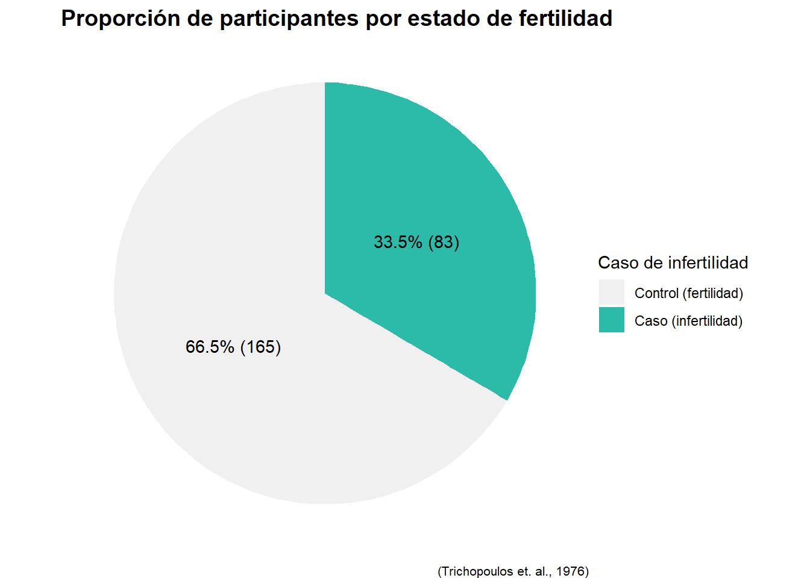

library(tidyverse)
library(plotly)
library(ggplot2)
library(DT)
library(scales)
library(ggthemes)
library(hrbrthemes)PF0953 - Tarea II
1. Carga de bibliotecas
2. Gráficos
2.1 Gráfico de dispersión
# Gráfico de dispersión
dispersion_ggplot2 <-
trees |>
ggplot(aes(x = Girth, y = Height)) +
geom_point(aes(text = paste0(
"Altura: ", Height, " pies", "\n",
"Diámetro: ", Girth, " pulgadas")),
color = "#2CBAA9", size = 2) +
scale_x_continuous(labels = comma, limits = c(0, NA)) +
ggtitle("Relación entre el diámetro del tronco y la altura de cerezos") +
xlab("Diámetro del tronco (pulgadas)") +
ylab("Altura del árbol (pies)") +
theme_ipsum() +
theme(plot.title = element_text(size = 14))
# Grafico plotly
ggplotly(dispersion_ggplot2, tooltip = "text") |>
config(locale = 'es') |>
layout(
annotations = list(
list(
x = 0.5,
y = -0.2,
text = "(Meyer, 1953)",
showarrow = FALSE,
xref = "paper",
yref = "paper",
xanchor = "center",
yanchor = "top",
font = list(size = 10)
)
)
)Este gráfico de dispersión ilustra la relación entre el diámetro del tronco y la altura de los árboles. Existe una correlación positiva entre ambas variables, aunque la relación no parece ser muy fuerte, dado que los puntos están bastante dispersos. Esto sugiere que, si bien puede haber cierta dependencia entre el diámetro y la altura, hay otros factores que podrían estar influyendo en las alturas observadas.
2.2 Gráfico de barras
# Grafico de barras con transformacion estadistica
barras_ggplot2 <-
mtcars |>
ggplot(aes(x = fct_infreq(factor(cyl)))) +
geom_bar(aes(text = paste0(
"Cantidad de coches: ",
after_stat(count))),
fill = "#2CBAA9") +
ggtitle("Cantidad de coches según el número de cilindros") +
xlab("Número de cilindros") +
ylab("Cantidad de coches") +
theme_ipsum() +
theme(plot.title = element_text(size = 14))
# Grafico plotly
ggplotly(barras_ggplot2, tooltip = "text") |>
config(locale = 'es') |>
layout(
annotations = list(
list(
x = 0.5,
y = -0.2,
text = "(Henderson and Velleman, 1981)",
showarrow = FALSE,
xref = "paper",
yref = "paper",
xanchor = "center",
yanchor = "top",
font = list(size = 10)
)
)
)Este gráfico de barras agrupa los coches según el número de cilindros de sus motores y presenta el conteo de cada categoría. El formato permite identificar cantidades, mostrando qué tipo de motor es más común dentro del conjunto de datos, proporcionando una visión clara de la distribución de los diferentes tamaños de motor. En este conjunto de datos, los motores de 8 cilindros son los más comunes.
2.3 Gráfico de pastel
# Agrupar y resumir los datos
porcentaje_infertilidad <- infert |>
group_by(case) |>
summarise(Total = n()) |>
mutate(Porcentaje = round(Total / sum(Total) * 100, 1))
# Gráfico de pastel
pastel_ggplot2 <- porcentaje_infertilidad |>
ggplot(aes(x = "", y = Total, fill = factor(case))) +
geom_bar(width = 1, stat = "identity") +
coord_polar(theta = "y") +
geom_text(
aes(label = paste0(Porcentaje, "% (", Total, ")")),
position = position_stack(vjust = 0.5)) +
scale_fill_manual(
values= c("0" = "#F0F0F0", "1" = "#2CBAA9"),
labels = c("0" = "Control (fertilidad)", "1" = "Caso (infertilidad)")) +
labs(
title = "Proporción de participantes por estado de fertilidad",
caption = "(Trichopoulos et. al., 1976)",
x = NULL,
y = NULL,
fill = "Caso de infertilidad") +
theme_void() +
theme(plot.title = element_text(size = 14, face = "bold"),
plot.caption = element_text(size = 8, face = "plain")
)
# Despliegue del gráfico
pastel_ggplot2
Este gráfico de pastel representa la proporción de participantes en el estudio que pertenecen al grupo de caso (infertilidad) y al grupo de control (fertilidad). Aproximadamente, dos tercios de las participantes son infértiles, mientras que el tercio restante es fértil. Este gráfico permite visualizar de manera intuitiva una distribución que no es evidente al observar únicamente los datos crudos.
2.4 Histograma
# Histograma
histograma_ggplot2 <- quakes |>
ggplot(aes(x = mag)) +
geom_histogram(aes(text = paste0(
"Magnitud (valor medio del rango): ", round(after_stat(x), 2), "\n",
"Frecuencia: ", after_stat(count))),
bins = 5,
breaks = c(4, 4.5, 5, 5.5, 6, 6.5),
fill = "#2CBAA9") +
scale_x_continuous(labels = comma, limits = c(4, 6.5)) +
ggtitle("Frecuencia de eventos sísmicos por magnitud") +
xlab("Magnitud (MB)") +
ylab("Frecuencia") +
theme_ipsum() +
theme(plot.title = element_text(size = 14))
# Histograma plotly
ggplotly(histograma_ggplot2, tooltip = "text") |>
config(locale = 'es') |>
layout(
annotations = list(
list(
x = 0.5,
y = -0.2,
text = "(Harvard PRIM−H project data sets)",
showarrow = FALSE,
xref = "paper",
yref = "paper",
xanchor = "center",
yanchor = "top",
font = list(size = 10)
)
)
)